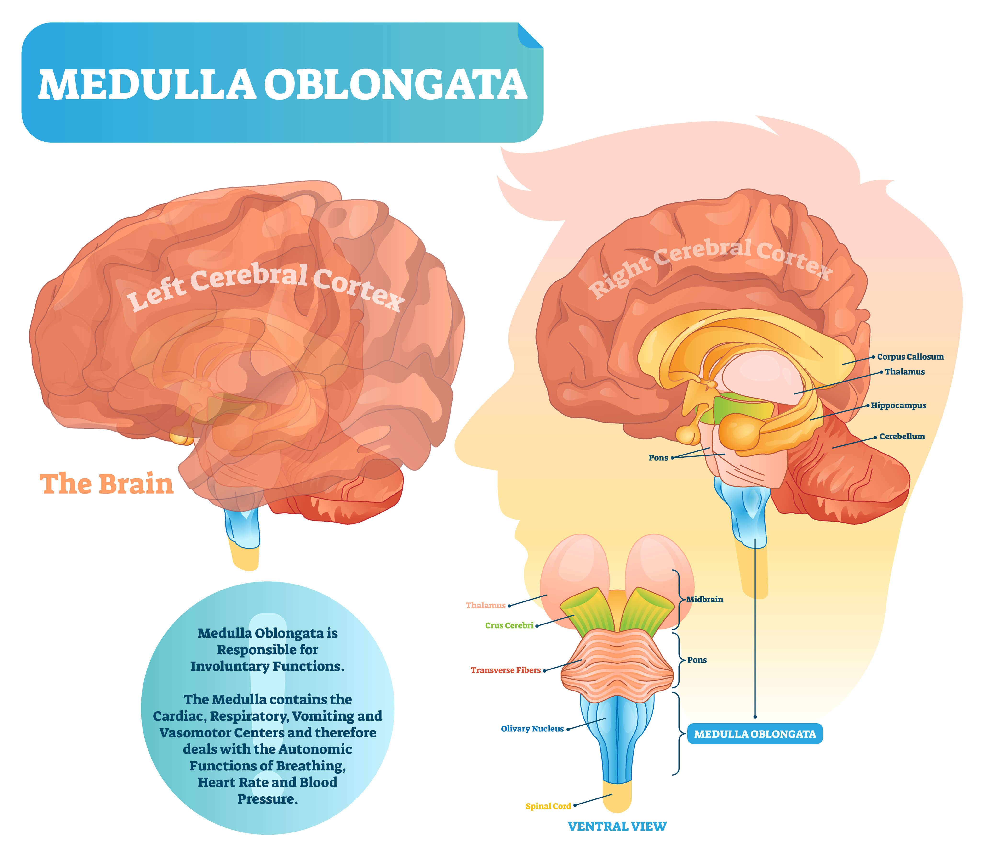

Nausea and Vomiting
Pharmacology of Antiemetics — Copy
Etiology
The term "nausea" refers to an uncomfortable feeling in the stomach or back of the throat that warns of the potential of vomiting and may or may not result in vomiting (Gotfried, 2022). The abrupt evacuation of stomach contents through the mouth is known as vomiting. In some circumstances, nausea can be considered a warning sign and protective mechanism for the body upon facing a potential toxin (Singh et al., 2016).
Nausea and vomiting can be caused by multiple etiologies, and they are common complaints in healthcare settings. Etiologies of nausea and vomiting include (Singh et al., 2016; Heckroth et al., 2021; Gravatt et al., 2023):
Select the arrows to learn more.
Regardless of the etiology, the objective of nausea and vomiting treatment should be for prophylaxis or the cessation of this response. This course will inform the healthcare team about the indications, contraindications, and adverse effects of the most used antiemetics. It will also discuss alternative and nonpharmacological treatments.
All drug-related information cited in this course was obtained from the manufacturer package inserts accessed July 18th, 2023 unless otherwise noted.
A Note About Implicit Bias
As you care for your patients, keep an open mind about their concerns, wants, and needs. Avoid making assumptions about your patient’s preferences to help refrain from being negatively influenced by your implicit bias. When our stereotypes lead us away from being rational or knowing and/or seeking the truth, implicit bias occurs. There are many ways that one can attempt to address or overcome implicit bias so that it does not affect patient care and/or the workplace environment. Increasing your self-awareness is one of those ways. Everyone brings bias to the table. Developing a comfort with owning such bias and talking about it can be one way to continue to raise self-awareness and notice patterns among others that could be red flags. Fostering a culture of openness in addressing biases may help change related behaviors.
As you care for your patients, keep an open mind about their concerns, wants, and needs. Avoid making assumptions about your patient’s preferences to help refrain from being negatively influenced by your implicit bias. When our stereotypes lead us away from being rational or knowing and/or seeking the truth, implicit bias occurs. There are many ways that one can attempt to address or overcome implicit bias so that it does not affect patient care and/or the workplace environment. Increasing your self-awareness is one of those ways. Everyone brings bias to the table. Developing a comfort with owning such bias and talking about it can be one way to continue to raise self-awareness and notice patterns among others that could be red flags. Fostering a culture of openness in addressing biases may help change related behaviors.
Pathology of Emesis

There are many pathways that stimulate nausea and vomiting (Heckroth et al., 2021; MacDougall & Sharma, 2022; Britannica, 2023):
- The chemoreceptor trigger zone (CTZ), which is found on the surface of the medulla oblongata, has receptors that can perceive the presence of emetic agents in the circulation of the blood and the cerebrospinal fluid. The CTZ receptors send information about the detection of emetic agents to the vomiting center.
- Also located in the medulla oblongata, the vomiting center governs the body’s action of emesis. It is also where this action originates.
- Additional areas that can trigger the response of emesis include the vestibular system and certain areas of the central nervous system (i.e., cortex, thalamus, hypothalamus, meninges). Emesis may also be caused by the stimulation of certain neural elements in the GI tract, such as peripheral receptors in the stomach.
The neurotransmitters involved in emesis include serotonin, histamine, dopamine, and neurokinin (Athavale et al., 2023).
In the Clinical Setting
Clinical Presentation
The signs and symptoms of nausea and vomiting vary among individuals and depend on the emetic trigger (Gravatt et al., 2023). Both nausea and vomiting may appear briefly and without any further signs or symptoms, but they may also be a component of a more complicated clinical presentation. Generally, the presentation includes some level of distress, complaint of discomfort or queasiness, possible changes in behavior or vision, a headache, pain, or stress. If vomiting has been occurring for a prolonged period, the presentation may include fluid-electrolyte imbalances or weight loss.
Adverse Effects
Short-term, less severe episodes of nausea and vomiting may be bothersome; however, persistent symptoms may have a number of adverse effects, including (National Cancer Institute [NCI], 2023b):
Short-term, less severe episodes of nausea and vomiting may be bothersome; however, persistent symptoms may have a number of adverse effects, including (National Cancer Institute [NCI], 2023b):
- Dehydration
- Electrolyte disturbances (hypokalemia, metabolic alkalosis)
- Aspiration pneumonia
- Loss of appetite
- Weight loss
- Malnutrition
- Delays in initiation or continuance of chemotherapy
- Poor quality of life
Experiencing nausea and vomiting can cause significant distress to the patient, impacting their quality of life (NCI, 2023b). If the patient associates the symptoms with other medications or procedures, it may cause anxiety, apprehension, or fear of future treatments. This can lead to the patient becoming withdrawn and noncompliant toward their treatment. Nausea and vomiting are responsible for numerous lost working days each year, and caring for patients with these symptoms can be costly. Patients who experience nausea and vomiting are often unable to eat, which may require additional treatment or hospitalization. In severe cases, patients may require IV hydration or parenteral nutrition to manage their symptoms (Gravatt et al., 2023).
In Malignancy
Chemotherapy-induced nausea and vomiting (CINV) is a common adverse event of cytotoxic chemotherapy regimens (Escobar et al., 2015; Warr, 2018). Due to its significant morbidity and negative impact on quality of life, it is especially feared by cancer patients. The incidence varies with the chemotherapy regimen used, as well as type of cancer and disease stage, patient age, previous history of motion sickness, and alcohol consumption, in addition to other patient and treatment-specific factors.
Nausea and vomiting resulting from chemotherapy or radiation therapy are classified according to their time of onset (Tan, 2022; Gravatt et al., 2023):
- Acute: Onset within 24 hours following the administration of radiation therapy or chemotherapy
- Delayed: Onset over 24 hours following the administration of radiation or chemotherapy and could continue for up to 5 days
- Anticipatory: Onset prior to the start of radiation or chemotherapy and often requires multiple drugs for control
- Breakthrough: Occurs despite prophylactic measures
- Refractory: Occurs following poor response to prophylactic regimens consisting of multiple antiemetic agents
The potential for vomiting in patients receiving treatment depends upon multiple factors (Gale, 2022; Gravatt et al., 2023; NCI, 2023b):
- Type of chemotherapeutic agent
- Rate of infusion
- Repetitive dosing
- Site of radiation
- Dose of radiation
- Combined radiation and chemotherapy
- Stage of tumor
- Tumors of the GI tract
- Patient-specific characteristics such as age, gender, and history of alcohol use
Nausea and vomiting can occur with many chemotherapeutic drugs, but the highest risk is with these drugs (Gravatt et al., 2023; NCI, 2023a):
- Carmustine (BiCNU®)
- Platinum-based derivatives (e.g., carboplatin [Paraplatin®], cisplatin)
- Cyclophosphamide (i.e., in higher doses)
- Dacarbazine (DTIC-Dome®)
- Mechlorethamine (Mustargen ®)
- Streptozocin (Zanosar®)
- Doxorubicin (i.e., in higher doses)
- Melphalan (Evomela®) (i.e., in higher doses)
- Epirubicin (Ellence®) (i.e., in higher doses)
- Sacituzumab govitecan-hziy (Trodelvy®)
- Ifosfamide (Ifex®)
These cancer drugs have the lowest risk of emesis (NCI, 2023a):
- Bleomycin
- Bevacizumab (Avastin®, Mvasi®)
- Busulfan (Myleran®)
- Fludarabine (Fludara®)
- Vinca alkaloids (e.g., Vincristine [Vincasar® PFS], vinblastine, vinorelbine)
- Cladribine (Leustatin®)
- Daratumumab (Darzalex®)
- Nivolumab (Opdivo®)
- Pembrolizumab (Keytruda®)
- Obinutuzumab (Gazyva®)
- Rituximab (Rituxan®)
- Pralatrexate (Folotyn®)
- Trastuzumab (Herceptin®)
Many guidelines exist for the treatment of CINV. In general, multidrug regimens that include a serotonin receptor type 3 (5-HT3) antagonist (e.g., ondansetron [Zofran®]), a glucocorticoid (e.g., dexamethasone [Decadron®]), and a neurokinin 1 (NK-1) antagonist (e.g., aprepitant [Emend® capsules/powder for solution, Cinvanti®, Aponvie®]) are recommended (NCI, 2023a). For mild cases of emesis, a two-drug regimen that includes dexamethasone and a 5-HT3 antagonist may be used.
Anticipatory nausea and vomiting is a type of CINV that is more likely related to psychological processes than physical processes. Benzodiazepines and psychotropic medications have shown some improvement in symptoms (NCI, 2023a). Behavior therapy remains the preferred first-line treatment for anticipatory nausea and vomiting (Kamen et al., 2014).
In Pregnancy
Nausea and vomiting during pregnancy affect most women at some point during gestation. The onset usually occurs before the 9th week of gestation and resolves by the 14th week for most women (American College of Obstetricians and Gynecologists [ACOG], 2021). Nausea and vomiting in pregnancy (especially early on) are often undertreated, possibly due to minimization by the patient or their caregivers. However, for some women, nausea and vomiting can affect the health of both the woman and fetus, affect the woman’s quality of life, and contribute to increased healthcare costs and lost productivity (ACOG, 2018).
Hyperemesis gravidarum is a severe form of nausea and vomiting that occurs during pregnancy. The condition is associated with significant costs and significant psychosocial and quality-of-life impairments (Castillo & Phillippi, 2015). Hospitalization occurs in up to 3% of all cases (Ogunyemi, 2022). Hyperemesis gravidarum can be detrimental to both the mother and the fetus, and can result in (Jennings & Mahdy, 2022; Ogunyemi, 2022):
- Severe dehydration
- Acute starvation
- Presence of ketones in the blood or urine
- Weight loss (< 5% of weight before pregnancy)
- Fluid volume deficit
- Imbalance of electrolytes and acid-base level
- Weakness and fatigue
- Dizziness
The ACOG recommends that nonpharmacological interventions should be the first-line treatment for nausea and vomiting during pregnancy (Jennings & Mahdy, 2022). However, if that treatment is unsuccessful, then pharmacological therapy is recommended. Combined pharmacological and nonpharmacological interventions can decrease maternal and fetal morbidity associated with hyperemesis gravidarum (Castillo & Phillippi, 2015).
Nonpharmacological Treatment
Effective management of nausea and vomiting may include nonpharmacological treatments (Gravatt et al., 2023). Nutritional, physical, and psychological strategies such as dietary changes, relaxation, cognitive distraction, acupuncture, acupressure, and yoga may all lessen nausea and vomiting caused by multiple etiologies. A few of these modalities will be highlighted here:
Select each tab to learn more.

Review
Flag/Unflag this Question
Your patient has anticipatory nausea with chemotherapy and has asked for education on ways to help decrease nausea. Which response could you include in this education?
The use of acupressure wristbands has been found to diminish and prevent nausea/vomiting, and their efficacy has been recognized by the FDA. Other nonpharmacological interventions to help prevent nausea include avoiding tight-fitting clothing, allowing food to cool to room temperature prior to eating, and consuming smaller portions of food.
The use of acupressure wristbands has been found to diminish and prevent nausea/vomiting, and their efficacy has been recognized by the FDA. Other nonpharmacological interventions to help prevent nausea include avoiding tight-fitting clothing, allowing food to cool to room temperature prior to eating, and consuming smaller portions of food.
Incorrect, try again
Key Takeaways
- Nausea and vomiting, whether generalized or related to pregnancy or malignancy, can be debilitating and have serious health effects.
- Consider your patient’s health history and their predisposing factors to nausea and vomiting.
- Be proactive by providing education on the nonpharmacological interventions and encouraging its use when nausea and vomiting are anticipated.